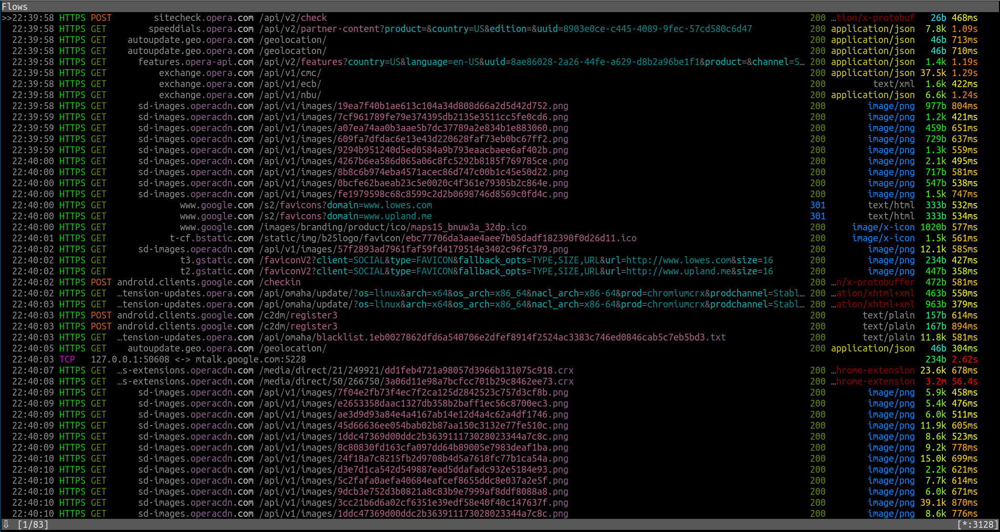
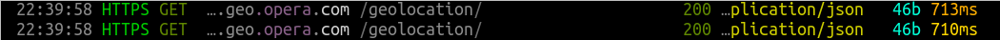
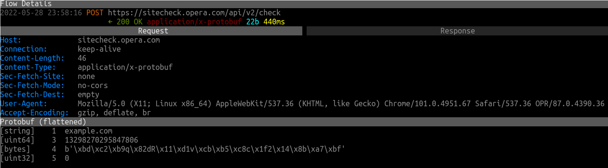
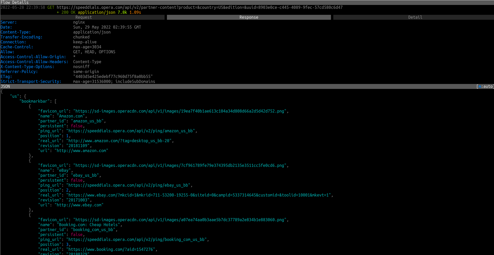

Opera
A web browser made by Opera Software, using the Blink engine. Has some interesting features like mouse gestures, a built-in ad blocker and VPN. It is the sixth most popular browser. But how does it look like in terms of privacy?
Version tested: 87.0.4390.36
Spyware Level: EXTREMELY HIGH
Opera makes about 83 unsolicited requests on its first run:
By default, it spies on all your browsing. Works closely with advertisers and trackers. It is integrated with Facebook/Meta, one of the biggest privacy violators in the world. Has Google as the default search engine. Closed source.
Geolocation
Opera makes geolocation requests:
Malware / Phishing protection
Anytime you visit a website, Opera will make a request like this to check if it is malicious. So it is literally spying on your whole browsing history:
This can be turned off in the settings ("Privacy & Security" → "Privacy" → "Protect me from malicious sites").
Facebook, Instagram and WhatsApp integration
Opera has a Facebook Messenger, WhatsApp and Instagram button on the sidebar, and Facebook/Meta (which owns WhatsApp and Instagram) and is one of the most anti-privacy organizations out there.
Opera's "Partners"
Opera has a list of "partners" — those are the websites that are in the Speed Dial by default.
If you click on one of them from there, they will know you visited from Opera's Speed Dial. Those requests also include unique user IDs.
Opera is closed source
And it will stay that way. From their FAQ (the message used to be there in 2017, they must have deleted it somewhere in 2018):
Opera has not officialy open sourced its browser. However, leaks of the old Presto web engine Opera used to use have appeared on the internet.
Even with that however, there could still other spyware might be hiding in there.
Credits
This article was originally written by digdeeper.neocities.org, but has been edited from it's original form.
This article was created on 11/25/2017
This article was last edited on 5/29/2022
If you want to edit this article, or contribute your own article(s), visit us at the git repo on Codeberg. All contributions must be licensed under the CC0 license to be accepted.